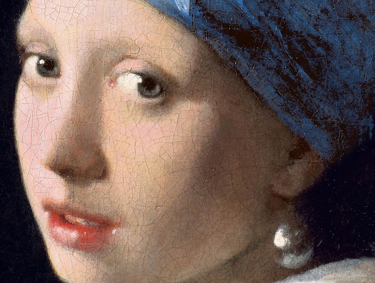
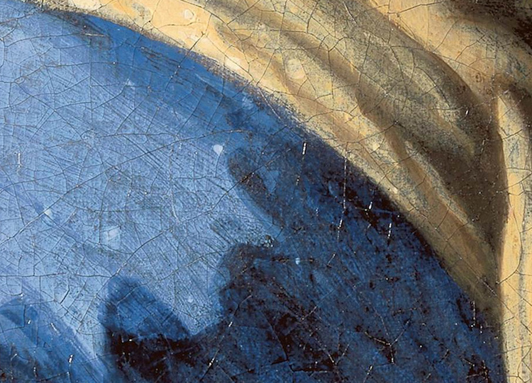
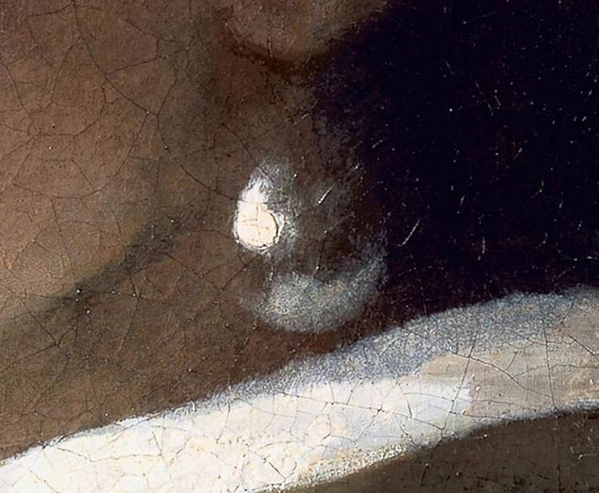

Técnicas |
La joven de la perla muestra las avanzadas técnicas de pintura de Vermeer, específicamente, su enfoque de la luz, el color y el trabajo con el pincel.Al igual que en otras obras, en La joven de la perla logra contornos precisos pero suavizados y dulcificados, de tal modo que percibimos la figura como si estuviera viva ante nuestros ojos. Todos los elementos se envuelven y armonizan entre sí de manera gentil. |
|  La joven de la pera,uso de la luz |
LuzVermeer siguió una meticulosa técnica de cuatro pasos, popular entre los artistas del siglo XVII.Primero, el artista “inventaba” o creaba un dibujo inicial en el lienzo. Luego, elaborada una pintura de base monocromática, una técnica conocida como “coloración muerta“. Después, añadía color. Finalmente, para que la pieza fuera excepcionalmente luminosa, aplicaba una fina capa de esmalte en determinadas partes del cuadro. Una restauración reciente ha revelado que el pintor hizo esto en dos áreas de La joven de la perla: la sección azul de su turbante y todo el fondo. |
|
|  La joven de la pera,uso del color |
ColorEsta pintura está hecha de pigmento derivado de lazurita, un mineral que se encuentra en la piedra semipreciosa lapis lazuli.Vermeer a menudo incorporó este costoso tono en sus pinturas, reservándolo para representaciones de cortinas, tapicería y, en La joven de la perla, ropa. Si bien es más prominente en la banda de su turbante, también es evidente en las sombras de la tela amarilla, ilustrando el “ uso liberal, casi poco ortodoxo, de este costoso pigmento” por parte de Vermeer. |
|
|  La joven de la pera,uso de pinceladas |
PinceladasPara apreciar el impresionante trabajo con el pincel de Vermeer, solo hay que fijarse en un detalle en La joven de la perla: el pendiente en sí. Desde la distancia, esta gran pieza de joyería parece estar elaborada con exquisito detalle. Sin embargo, tras una inspección más cercana, es evidente que se compone de unos pocos trazos simples que sugieren asombrosamente la forma y el brillo de una perla. |
|
| Galería | Contacto | ||||